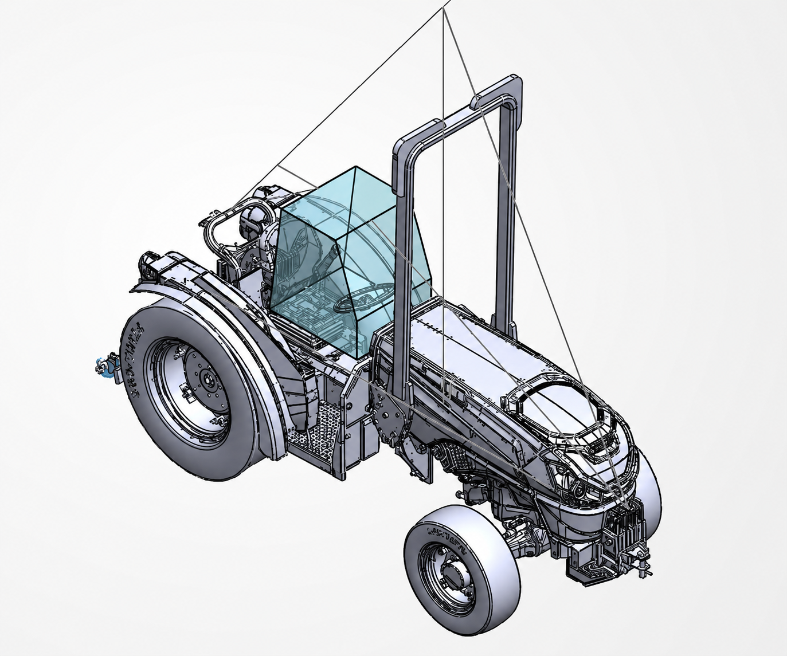

A study of how rollover protective structures are designed and evaluated through SAE J1194 requirements, portal-frame calculations, and nonlinear finite element analysis.

Rollover protective structures, commonly called ROPS, are designed to protect tractor operators during a rollover. The structure must absorb a large amount of energy while keeping a safe clearance zone around the operator.
For this project, I studied the early design and validation process by reconstructing the required calculations, reviewing the frame's load path, developing the structural model, and evaluating its behavior through nonlinear finite element analysis.
One of the most interesting parts of this project was learning that a ROPS is not designed to remain perfectly rigid. Controlled permanent deformation can help the frame absorb rollover energy.
The important requirement is that the deformation remains stable. The structure must stay attached to the tractor and must not enter the protected operator clearance zone.
SAE J1194 outlines the testing requirements for rollover protective structures used on wheeled agricultural tractors. The standard includes side loading, rear loading, and a vertical crush test.
Together, these tests evaluate whether the structure can absorb the required energy, remain connected to the tractor, and continue protecting the operator after it has deformed.
Start with the tractor mass, operating weight, and other machine information needed to establish the test requirements.
Use SAE J1194 to determine the required side energy, rear energy, and vertical crush load.
Model the structure as a simplified portal frame to estimate reactions, internal forces, and critical bending moments.
Build the frame around the required operator clearance zone and define the tubes, mounts, and connections.
Study deformation, stress development, load transfer, plastic behavior, and protection of the clearance zone.
Because the frame is expected to experience permanent deformation, a basic linear analysis would not fully represent its behavior. I used nonlinear finite element analysis to study how the frame deforms, where stresses develop, and whether the protected space remains clear.
The simulation shows how deformation and stress develop as the structure responds to the applied loading.
The simulation helped me understand how loads move through the frame and where the largest demands occur. I paid particular attention to the fixed bases, upper corners, tube bends, mounting plates, weld locations, and fastener connections.
I also learned that a high stress value does not automatically mean the design has failed. Sharp corners, idealized supports, poor mesh connections, and unrealistic boundary conditions can create numerical stress concentrations that need to be reviewed carefully.
The simulation was used to study how the frame carried load, where deformation developed, and whether the operator clearance zone remained protected.
I focused on the overall behavior of the structure rather than relying on a single stress value. Areas such as the fixed bases, upper corners, tube bends, and mounting connections required closer review because idealized supports and sharp geometry can create local stress concentrations.
This project helped me better understand the difference between linear and nonlinear structural behavior. It also showed me why deformation, load paths, boundary conditions, and connection details all need to be considered together when reviewing a finite element model.
My biggest takeaway was that simulation results need engineering judgment. A model can show where the structure may be vulnerable, but the assumptions behind the model are just as important as the results it produces.